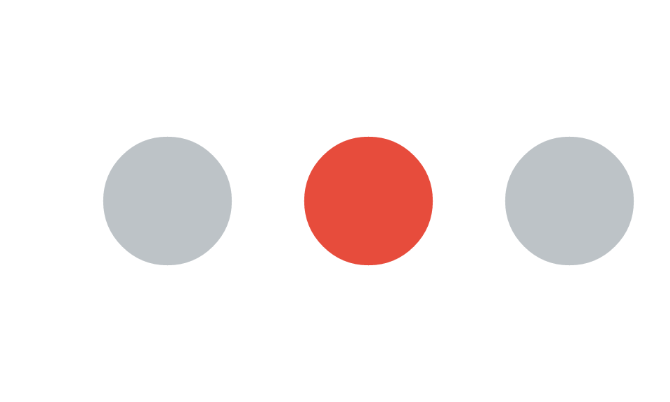
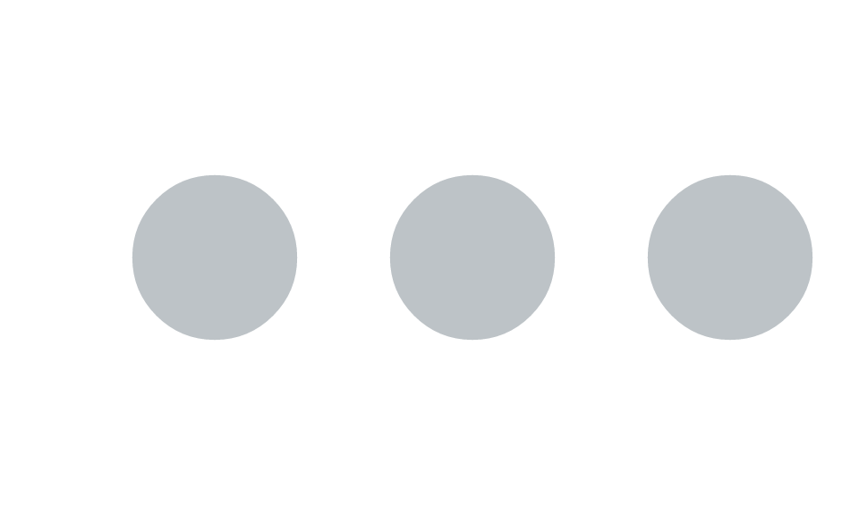

Asking a scene what it drew: read-back, picking, and editing
Source:vignettes/retained-mode.Rmd
retained-mode.RmdA vellum scene is a value, and once it has been through the layout solve it can answer questions about itself: where did each element end up, and what is drawn at this point? That read-back is the capability with no counterpart in grid, and it is what an interactive host, an accessibility layer, or a test suite binds to. This vignette covers it, and the editing API that goes with it.
Being retained is not the interesting part. grid retains its scene
too: a gTree is a value, editGrob() derives a
modified copy, and a drawn plot’s display list can be walked and
rewritten with grid.ls(), grid.get(), and
grid.edit(). Naming and editing nodes below will look
familiar for that reason. What grid leaves to you is everything in the
first paragraph, because its resolved geometry exists only during a draw
and is gone when the draw ends.
Naming nodes
Every grob and viewport takes an optional name. A name
turns a node into something you can look up and modify later.
dots <- vl_scene(5, 3, bg = "white") |>
draw(circle_grob(x = 0.25, y = 0.5, r = 0.16, name = "a",
gp = vl_gpar(fill = "#bdc3c7", col = NA))) |>
draw(circle_grob(x = 0.55, y = 0.5, r = 0.16, name = "b",
gp = vl_gpar(fill = "#bdc3c7", col = NA))) |>
draw(circle_grob(x = 0.85, y = 0.5, r = 0.16, name = "c",
gp = vl_gpar(fill = "#bdc3c7", col = NA)))
node_names(dots)
#> [1] "a" "b" "c"node_names() lists the names in paint order, and
get_node() returns the node itself, so you can inspect a
value you built earlier.
get_node(dots, "b")
#> <vellum::grob_circle>
#> @ name : chr "b"
#> @ gp : <vellum::vl_gpar>
#> .. @ col : logi NA
#> .. @ fill : chr "#bdc3c7"
#> .. @ lwd : NULL
#> .. @ alpha : NULL
#> .. @ lty : NULL
#> .. @ lineend : NULL
#> .. @ linejoin : NULL
#> .. @ linemitre : NULL
#> .. @ fontfamily: NULL
#> .. @ fontface : NULL
#> .. @ fontsize : NULL
#> .. @ cex : NULL
#> .. @ lineheight: NULL
#> .. @ halo_col : NULL
#> .. @ halo_width: NULL
#> .. @ features : NULL
#> .. @ antialias : NULL
#> .. @ crisp : NULL
#> .. @ dash_phase: NULL
#> @ vp : NULL
#> @ id : NULL
#> @ role : NULL
#> @ keys : NULL
#> @ meta : NULL
#> @ x : unit [1:1] 0.55npc
#> @ y : unit [1:1] 0.5npc
#> @ r : unit [1:1] 0.16npc
#> @ sketch: NULLEditing a node
edit_node() returns a new scene with one node’s
properties changed. It is copy-on-modify: the original scene value is
untouched, so you can derive variants without disturbing the source.
editGrob() gives you the same guarantee in grid; what
edit_node() adds is that untouched subtrees keep their
internal node ids, which is what the repaint-boundary cache keys on.
Both walk the tree to find the node, but neither copies a subtree it did
not touch: on a scene of 20,000 named sibling grobs an edit costs about
14 ms here against about 430 ms for editGrob(), because
grid’s copy duplicates the siblings and this one does not. Here we
highlight the middle dot.

The original is unchanged:
dots
This is the mechanism a host uses for hover and selection: keep one
scene, and on an interaction re-derive it with the touched node
restyled, then re-render. Flagging that node’s viewport with
cache = TRUE (a repaint boundary) makes the re-render
cheap, since only the changed subtree is re-rasterised.
Hit-testing
hit_test() answers the inverse question: given a point,
which node is drawn on top there? grid ships
grid.locator(), which waits for one interactive click and
returns coordinates rather than a node; you can build a picker on top of
grobPoints() and a point-in-polygon test, or tag exported
SVG elements the way gridSVG and ggiraph do. vellum compiles the
retained scene into a colour pick-buffer instead, through the same
transform, clipping, and paint-order code that drew it, so the answer is
exact with respect to geometry, clipping, and paint order rather than
coming from a second geometry implementation you have to keep in sync.
It is also an ordinary function call: no device, no user, callable as
often as you like. Coordinates default to "npc"
(0..1, y up); pass units = "px" for device
pixels.
hit_test(dots, x = 0.25, y = 0.5) # over dot "a"
#> [1] "a"
hit_test(dots, x = 0.55, y = 0.5) # over dot "b"
#> [1] "b"
hit_test(dots, x = 0.05, y = 0.1) # empty space
#> NULLA point over a named grob returns its name; over an unnamed grob it
returns NA; over blank canvas it returns NULL.
That is enough to route a click back to the datum that drew the
mark.
A per-element model of the scene
hit_test() picks one node; scene_model()
returns the whole picture. It walks a rendered scene and returns one row
per drawn element, pairing each element’s identity with its resolved
device-pixel bounding box.
sm <- scene_model(dots)
str(sm, max.level = 1)
#> List of 2
#> $ elements:'data.frame': 3 obs. of 14 variables:
#> $ panels :'data.frame': 0 obs. of 14 variables:
sm$elements[, c("mark", "name", "x", "y", "w", "h")]
#> mark name x y w h
#> 1 circle a 120 144 92.16 92.16
#> 2 circle b 264 144 92.16 92.16
#> 3 circle c 408 144 92.16 92.16The real power shows up when marks carry a data key (and
optional free-form meta), which the batched grobs accept
per element. The key is emitted by the SVG backend as
data-key on each element and surfaced here, so a host can
render the SVG once (scene_svg()), then use this table to
map a DOM event back to the originating row of data.
keyed <- vl_scene(5, 3, bg = "white") |>
draw(points_grob(
x = vl_unit(c(0.25, 0.55, 0.85), "npc"), y = 0.5,
size = vl_unit(6, "mm"),
key = c("row-1", "row-2", "row-3"),
gp = vl_gpar(fill = "#3a7bd5", col = NA)
))
scene_model(keyed)$elements[, c("mark", "key", "x", "y")]
#> mark key x y
#> 1 point row-1 120 144
#> 2 point row-2 264 144
#> 3 point row-3 408 144Every mark family can be keyed
Points, rects, circles, hexagons, sectors and segments are batched marks: they report a row whether or not they carry a key, so a plain scene still yields a geometry table.
Lines, polygons, paths, rounded rects and text carry keys too, and report a row only when keyed. The asymmetry is deliberate: a plot is full of unkeyed gridlines and axis labels, and reporting those would bury the marks that mean something in thousands of phantom elements.
series <- vl_scene(5, 2.4, bg = "white") |>
push(vl_viewport(name = "panel", xscale = c(1, 6), yscale = c(0, 10))) |>
draw(lines_grob(vl_unit(1:6, "native"), vl_unit(c(2, 5, 4, 8, 6, 9), "native"),
gp = vl_gpar(col = "#2C6FA6", lwd = 2),
key = "series-A", meta = list(list(series = "A")))) |>
draw(text_grob(c("low", "high"), x = vl_unit(c(1, 6), "native"),
y = vl_unit(c(2, 9), "native"), gp = vl_gpar(fontsize = 8),
key = c("lbl-low", "lbl-high"))) |>
pop()
scene_model(series)$elements[, c("mark", "key", "x0", "x1")]
#> mark key x0 x1
#> 1 line series-A 0.000000 480.000000
#> 2 text lbl-low -9.104167 9.104167
#> 3 text lbl-high 468.364583 491.635417A whole series as one addressable thing — hover the line, highlight the series — and per-label keys on the annotations. Neither was possible before: the marks existed, but nothing could refer to them.
Hit-testing that respects the shape
A bounding box is the right answer for a rectangular brush and the wrong one for anything diagonal or thin. The line above runs from the bottom-left of its panel to the top-right, so its bounding box is almost the whole panel:
el <- scene_model(series)$elements
el[el$key == "series-A", c("x0", "y0", "x1", "y1")]
#> x0 y0 x1 y1
#> 1 0 23 480 184Ask “what is nearest?” with only that, and the line answers from
anywhere in the plot. vl_nearest() measures to the geometry
instead:
demo <- vl_scene(4, 3, bg = "white") |>
draw(segments_grob(0.12, 0.12, 0.88, 0.88,
gp = vl_gpar(col = "#C0392B", lwd = 2), key = "diagonal")) |>
draw(points_grob(0.82, 0.18, size = vl_unit(3, "mm"),
gp = vl_gpar(fill = "#2C6FA6", col = NA), key = "corner"))
# This probe is INSIDE the diagonal's bounding box, and far from the diagonal.
vl_nearest(demo, 0.82, 0.18, n = 2)
#> key kind dist
#> 2 corner point 0.000
#> 1 diagonal segment 147.456Distances are to the real shape: perpendicular to a segment, to the disc for round marks, to the nearest edge of an open polyline, and zero anywhere inside a closed polygon or path — so clicking the middle of a choropleth region hits the region rather than its nearest border.
region <- vl_scene(3, 3, bg = "white") |>
draw(polygon_grob(c(.2, .8, .5), c(.2, .2, .8),
gp = vl_gpar(fill = "#F1C40F", col = "grey30"), key = "tri"))
vl_nearest(region, 0.5, 0.4)
#> key kind dist
#> 1 tri polygon 0For a host that cannot ask
A browser cannot call back into R on every mouse move.
element_geometry() hands over the same true geometry
once, so the client computes distances locally at
whatever rate it likes — typically an R-tree over the boxes to shortlist
candidates, then an exact test against these vertices to rank them.
element_geometry(demo)
#> key kind vertex x y
#> 1 diagonal segment 1 46.08 253.44
#> 2 diagonal segment 2 337.92 34.56
#> 3 corner point 1 314.88 236.16Two endpoints for the segment and one centre for the point — not four box corners. That is the difference that lets a client hit-test a diagonal at all.
Why this matters
Ranked by how much of it you cannot get elsewhere:
- the scene can be read back as a table of elements with keys
and geometry (
scene_model()), which is the host-agnostic bridge an interactive layer, a screen-reader description, or a positional test binds to; - any mark can be made addressable — including lines, polygons and labels, which is what lets a whole series or an annotation be a thing the user can point at;
- marks can be picked by their true geometry
(
vl_nearest()), or that geometry handed to a client to do it itself (element_geometry()), so a diagonal is not matched from the far corner of its bounding box; -
any point can be picked back to the node that drew
it (
hit_test()), through the same compile path that rendered the scene, so the answer agrees with the picture by construction; - nodes can be named, inspected, and edited
(
node_names(),get_node(),edit_node()) — as they can in grid, the difference being that you are editing a value rather than device state.
The first two are what vellumwidget is built on. It adds
no drawing code of its own: it renders the scene’s SVG, reads this
table, and attaches behaviour. ```